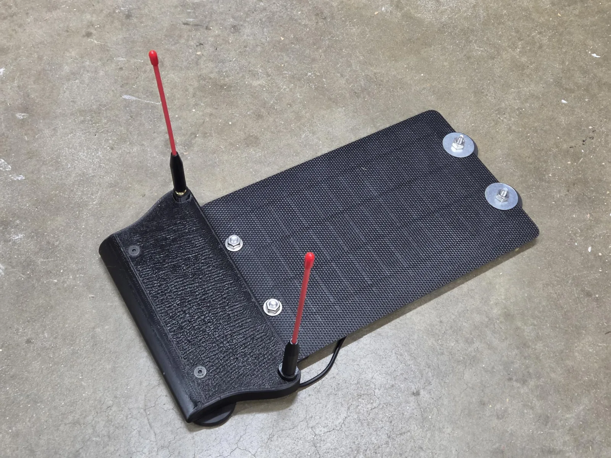
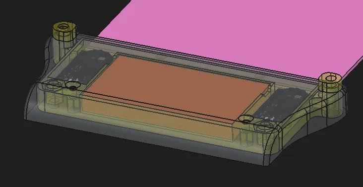

RADIOS · BUY 2
Heltec V4 ESP32-S3 LoRa board (SX1262, no OLED)
Choose the “Standard without GPS” option. One runs Meshtastic, the other MeshCore companion firmware.
View on AmazonWhile one radio transmits, the other one is overloaded and cannot receive. At full power (the high-power Heltec V4 reaches 28 dBm), the receiving radio gets about +8 to +14 dBm at its antenna input, above conservative design margins for LoRa receivers. Long-term effects on the hardware are not characterised.
The reference build is used every day and works, with relaying, automatic position and telemetry turned off to keep losses near zero. Build it only if you understand and accept this limitation, and read the analysis before changing transmit power, boards, antennas or spacing.
A low-profile, magnetic mount that carries one Meshtastic radio and one MeshCore radio on the car roof, powered by a shared 10,000 mAh battery and topped up by a small solar panel. Your phone runs MeshCrossway inside the car and connects to both radios over Bluetooth.
Before you build: read the RF coexistence notice about running two radios with antennas 20 cm apart.






These are the exact parts used in the build above. Buying the same ones avoids surprises with fit and connectors.
Choose the “Standard without GPS” option. One runs Meshtastic, the other MeshCore companion firmware.
View on AmazonTwo antennas with u.FL-to-SMA pigtails, one per radio. 915 MHz is the US band; choose the antenna that matches your region.
View on AmazonAbout 37 Wh with built-in protection circuit, shared by both radios in the central bay.
View on AmazonMonocrystalline panel with DC cable, bolted to the base to keep the battery charged. Choose the “6W x2” option.
View on AmazonChoose “1/4in-30LB-1.69in”, 6 pieces. The build uses four: two under the base, two under the far end of the panel.
View on AmazonYou will also need screws, nuts and washers to close the cover, fix the boards and attach the panel and magnets.
Each time one radio transmits, the other misses whatever arrives during that packet (about 0.1–1 s). The loss is roughly the share of time the other radio spends transmitting: under 1 % in a quiet mesh, a few percent in a normal one, more if the Meshtastic radio relays a busy mesh.
The SX1262 transceiver itself is rated for +10 dBm maximum input. On the Heltec V4 an external front-end module takes this power first. Long-term stress at full power is not characterised, and boards without a front end, or with stronger amplifiers, have less margin.
Stacking one antenna above the other (≈ 28 dB at 33 cm), moving one antenna further away (≈ 6 dB per doubling of distance) or lowering transmit power all help. Turning off relaying is the easiest step: set Meshtastic’s Rebroadcast Mode to None (MeshCore Companion firmware already does not relay), so each radio only transmits its own traffic. A filter cannot fix it: the channels are only 3.65 MHz apart.
Two parts: a base that holds the radios, battery and panel, and a textured cover with antenna openings.
About 209 × 100 × 26 mm · 4.4 MB
Download base STLAbout 215 × 95 × 19 mm · 1.7 MB
Download cover STLFiles and assembly notes are also in the GitHub repository. Free to print for personal, noncommercial use under the repository’s license. Please do not resell the files or the printed parts. Share your build or improvements in GitHub feedback.